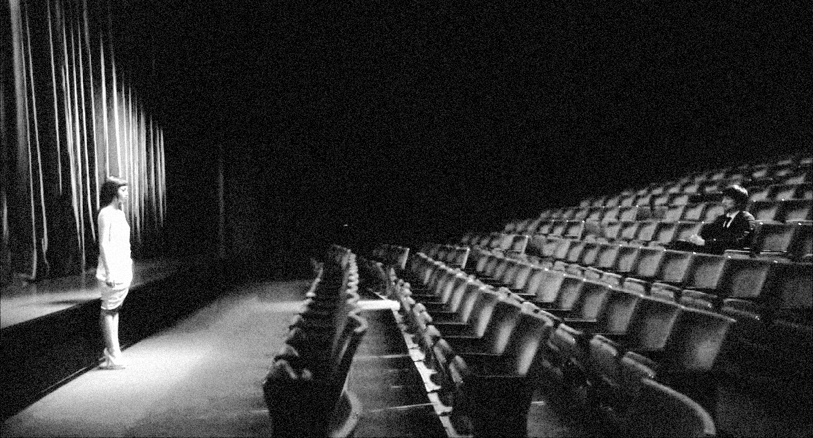

Specimen No. Ⅱ | Written by Maya Lee
The protagonist, Lilico, is a top-tier model with a massive fanbase, followed by every media outlet. However, she harbors a secret that must never be revealed: her beauty is entirely the product of full-body plastic surgery. The image she projects to the public is a perfectly crafted illusion, and to maintain that facade, she must confront her rotting essence every single day.
While butterflies typically symbolize beauty and transformation, the biological fact that some butterflies feed on the carcasses of dead organisms serves as a chilling metaphor in the film’s direction. Lilico's brilliant career and flawless appearance are, in fact, blossoms blooming atop a corpse— body that has been butchered through the process of full-body plastic surgery and the ugly desires of others. As the film progresses, the illusion of swarms of butterflies hovering around Lirico—who is descending into physical and mental madness and ruin—can be interpreted as a directorial choice suggesting that the more she obsesses over beauty, the more she is being destroyed. [1]
In < Helter Skelter >, Lirico’s physical and mental breakdown reached its peak as a result of the side effects of the plastic surgery.
Ultimately, the fluttering of the butterflies surrounding Lirico are not elements that further enhance her beauty, but rather predators revelling in her dying body and mind. The vast collective known as the public praises the artificial beauty she has created by consuming herself, yet when the truth of Lirico’s plastic surgery is revealed in the latter half of the film, they condemn her beauty as a lie, causing the once top-ranked model Lirico to plummet to the very bottom.

Once the truth about her plastic surgery is revealed, Lirico held a press conference in front of everyone.
However, Lirico represents the women of modern society who have lived under the pressure to conform to specific standards of beauty and possess a particular appearance.[2] Lirico is a character who embodies the desire for beauty that these women harbor within themselves but cannot reveal to the world. The fundamental reason why Lirico has become so obsessed with beauty, even to the point of self-reproach, may well lie with the public, who set the standards of beauty and drive people to an extreme fixation on it. ⁋